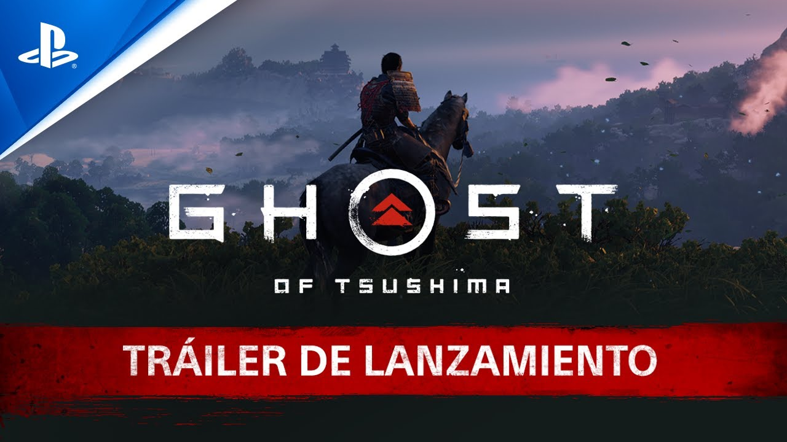

CONVERTEIX-TE EN EL FANTASMA
Endinsa't en l'impressionant món de Ghost of Tsushima, un videojoc d'acció i aventura desenvolupat per Sucker Punch Productions i publicat per Sony Interactive Entertainment. Llançat al juliol de 2020 exclusivament per a PlayStation, aquest títol transporta els jugadors a l'illa de Tsushima al Japó feudal del segle XIII, durant la primera invasió mongola. A Ghost of Tsushima, assumeixes el paper de Jin Sakai, un honorable samurai que ha d'adoptar mètodes poc convencionals per defensar el seu poble i alliberar la seva terra de l'ocupació enemiga. Amb un entorn de món obert impressionant, un sistema de combat fluid i una narrativa carregada d'emoció, el joc ofereix una experiència inoblidable que combina història, cultura i acció cinematogràfica.
Sobre Sucker Punch Productions
Sucker Punch Productions és un estudi nord-americà amb seu a Bellevue, Washington. Fundat l'any 1997, és conegut per crear sagues icòniques com Sly Cooper i inFAMOUS. Amb Ghost of Tsushima, Sucker Punch va consolidar la seva reputació com un dels estudis més destacats de la indústria, demostrant la seva habilitat per combinar una jugabilitat immersiva amb mons detallats i narratives captivadores. Explora aquesta wiki per descobrir tot el que envolta Ghost of Tsushima: personatges, armes, habilitats, ubicacions, missions i tots els secrets que fan d'aquest títol una obra mestra contemporània.
Click per anar directe a la Web Oficial de Sucker Punch Productions

Click per anar directe a la Web Oficial del Joc
VERSIONS DE GHOST OF TSUSHIMA
Versió Original: Ghost of Tsushima (2020)
- Llançament: 17 de Juliol de 2020
- Dispositius disponibles: PS4
- Dades Interesants:
- 1. Inspirat en el cinema d’Akira Kurosawa
- - Homenatge a les pel·lícules de samurais del llegendari director japonès Akira Kurosawa.
- 2. Un món obert sense indicadors en pantalla
- - Sistema innovador del vent guia, que indica la direcció a seguir eliminant els marcadors a la pantalla i potenciant la immersió en el món.
- 3. Precisió històrica combinada amb ficció
- - Tot i que la invasió mongola de 1274 a Tsushima va ser real, la història del joc pren moltes llicències creatives.
- 4. Un èxit sense precedents en vendes
- - Ghost of Tsushima va vendre més de 5 milions de còpies en menys d’un any.
- 5. Atenció al detall en la flora i la fauna
- - El joc destaca pels seus paisatges impressionants, amb una naturalesa viva i dinàmica.
- 7. Un projecte a gran escala
- - El desenvolupament va durar 6 anys i va requerir un equip divers que va col·laborar amb experts en cultura japonesa per garantir l’autenticitat.
- 8. Banda sonora immersiva
- - Després del llançament del joc, l'illa de Tsushima va rebre un augment en l'interès turístic.
- 1. Inspirat en el cinema d’Akira Kurosawa
PORTADA - GHOST OF TSUSHIMA (2020)
Click per anar directe a la Pàgina Web de compra del Joc a la PlayStation Store
TRAILER DE LLANÇAMENT - GHOST OF TSUSHIMA (2020)
Click per anar directe al Tràiler de Llançament
VERSIONS DE GHOST OF TSUSHIMA
Versió Director's Cut: Ghost of Tsushima - Director's Cut (2021)
- Llançament: 20 d'Agost de 2021
- Dispositius disponibles: PS4, PS5 & PC
- Dades Interesants:
- 1. Nova expansió a l’Illa Iki
- - Inclou una expansió totalment nova que porta Jin Sakai a la misteriosa Illa Iki, una regió propera a Tsushima.
- 2. Millores gràfiques i tècniques a PlayStation 5
- - Aprofita al màxim la potencia de la PS5 amb millores destacades, com gràfics millorats amb resolució dinàmica 4K i una taxa de refresc de 60 FPS.
- 3. Millores en la qualitat de joc
- - Diverses millores basades en els suggeriments de la comunitat, com un nou sistema de bloqueig durant el combat, que ofereix més precisió en les lluites
- 1. Nova expansió a l’Illa Iki
TRAILER DE LLANÇAMENT - GHOST OF TSUSHIMA: DIRECTOR'S CUT

Click per anar directe al Tràiler de Llançament de Ghost of Tsushima - Director's Cut
TRAILER DE LLANÇAMENT - GHOST OF TSUSHIMA: DIRECTOR'S CUT

Click per anar directe al Tràiler de Llançament de Ghost of Tsushima - Director's Cut